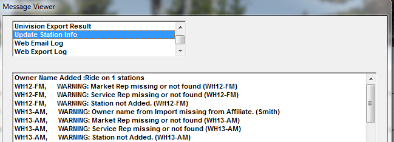

Additional Topics
Updating Existing Stations
You can update station information from a CSV file at any time (depending on Site Options settings). To do so, go to File -> Import -> Update/Add Stations.
Accept the default import path, or browse to the correct import file.
Select the file, and verify the information to be imported. Errors in the Import file will appear in red; make any necessary corrections, and click OK.
Answer the two questions accordingly on the main screen, and click Import.
- Report stations not included on the import file: This gives you a list of the stations that are defined in Affiliate but not in the Imported file
- Report stations not in system: This gives you a list of stations in the file but not in Affiliate. These stations were not added to the system during the import
Any new information will be listed. Match the new item to an existing definition.
Results will appear in green.
A text file with all import results is created and can be viewed through Accessories -> Messages -> Update Station Info.

Updating and Adding Stations when not using Station IDs
There are two ways stations can be updated when not using Station IDs, which are available on the Affiliate Site Options screen, on the Options tab, and labeled “Import in update mode” and “Import in add mode”.
Import in update mode
“Import in update mode” updates existing stations only, matching up stations by call letters. Any new stations on the import file are bypassed. When setting this field to “Import in update mode”, the Import menu option will appear as “Update Existing Stations”. Browse to the import file and run the import to update the existing stations.
Import in add mode
“Import in add mode” adds new stations only (stations with call letters that do not match existing call letters defined in the affiliate system). Any existing stations on the import file are bypassed. When setting this field to “Import in add mode”, the Import menu option will appear as “Continue Adding Stations”. Browse to the import file and run the import to continue adding stations. After running the import in “Continue Adding Stations” mode, the Site Options setting will automatically change to “Import in update mode”.
Additional Options Version 7.1 and Above
Allowed Station Bands
On version 7.1 and above, when additional allowed station bands (other than AM and FM) are entered in Affiliate Site Options, the allowed bands are shown on the main import screen, as shown in the picture below. Stations with those bands that are detected during the Station Import will be added or updated (depending on whether the import is being run in add or update mode). Stations with bands that are not FM or AM or one of the additional allowed bands will continue be bypassed during the Station Information import process.
Alaska and Hawaii Time Zone Conversion
When importing in Update and Add mode, on version 7.1 and above, two additional import options appear: “Convert Alaska time zone to Pacific” and “Convert Hawaii time zone to Pacific”.
During the import process, if “A” is detected as the station zone and the “Convert Alaska time zone to Pacific” option is checked on, then the time zone will be changed to Pacific for that station. If that option is not checked on, then the station with a zone of A (Alaska) gets imported as the Alaska Time Zone.
Likewise, if “H” is detected as the station zone and the Hawaii option is checked on, then the time zone will be changed to Pacific for that station. If that new option is not checked on, then the station with a zone of H (Hawaii) gets imported as the Hawaii Time Zone.
Bypassing DMA and MSA Clean-up Process
On version 8.1 and above, a checkbox labeled “Disable cleanup of unused DMA/MSA” is available on the Station Import screen. This is unchecked by default. When checked on, the process that happens during the station import that removes unused DMAs and MSAs will be skipped.
Notifying Stations of Updates
On web version 2 and earlier, stations use their call letters to sign onto the Affidavit System, so it is important to notify stations when their call letter changes are updated. (Starting with Web Version 3, station personnel have their own individual login account.)
To do so, create a filter using the “Call Letters Change Date” selection and enter the range of dates to check in the From Value and To Value field. (For more information on using Filters, please see the Affiliate Management help document that is available on the Counterpoint website.)
Once the call letter changes have been found, click “Station Email” to send all of the filtered stations a notification of the change, and instructions to logon to the Counterpoint Affidavit system using their new call letters.
Adding Station Personnel
For information on new Station Personnel and the Affidavit website, click here.